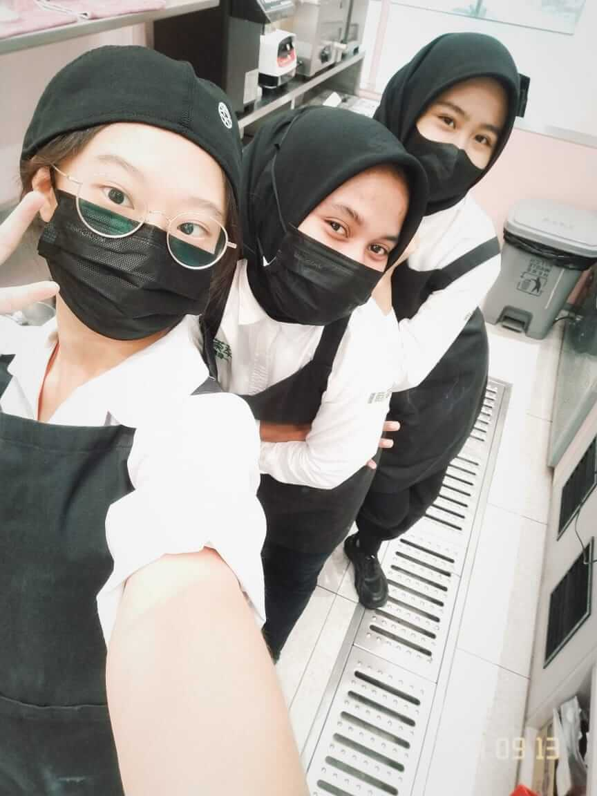

University student’s journey about juggling studies and part-time work
By SEOW WEI SIN | Sunday, 10 Aug 2025 | 9:15 AM MYT
Part-Time Job: Koh En Ru mops the floor. Besides preparing drinks, her duties also involved cleaning. Photo provided by Koh En Ru.
KUALA LUMPUR: IMany university students do a part-time job when studying, even secondary school students. There are many reasons for students doing part-time jobs. The students will learn something from part-time jobs.
Koh En Ru, 20-year-old, is a university student who has been doing part-time jobs since she was 17-year-old. She studies a Bachelor of Broadcasting in Tunku Abdul Rahman University of Management and Technology (TARUMT).
She mentioned that she decided to take up a part-time job as she wants to have her own money to buy something and does not want to take it from her parents. Thus, when she saw the hiring poster, she tried to apply for it.
Her family supports her to do a part-time job and they feel she is being independent.
She has worked five part-time jobs, including food and beverage service crew, wholesaler’s assistant and rink attendant.
Currently, she works part-time as a rink attendant at Blue Ice Skating Rink. She usually works on weekends, because she has to attend her classes on weekdays.
She expressed that she works 7.5 hours per day. Her income is RM10 per hour. She will get an extra income if she works overtime.

Friends:Koh En Ru (left) and her colleagues are taking photos during rest time. She worked at Tea Expert previously. Photo by Koh En Ru.
She and her colleagues become friends. For every job she had before, she still kept her colleagues’ contact numbers and would hang out with them occasionally.
She said that since she is studying broadcasting, it is busy for her to do shooting projects. If the shooting date clashes with her working hours, she will take leave from the company. Her manager has warned her about it.
She does not face the big challenge of balancing her work and studies but she mentioned that the university timetable disrupted her work schedule. Hence, she needs to inform her company of changes to her working days and she will go to work when she is free to fill-up the working hours.
She feels stressed when she wants to balance her studies and part-time job. “But I will do my best to solve the problem and turn to learning motivation,” she said.
She expressed that she has learned time management, independence and social skills from her part-time jobs. She added that her colleague has taught her how to skate.
“Need to have time management and don’t give you own stress on it, if tried (tired) just quit and get a rest,” she said to young adults who want to work part-time.